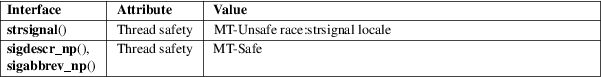

strsignal, sigabbrev_np, sigdescr_np, sys_siglist − return string describing signal
Standard C library (libc, −lc)
#include <string.h>
char
*strsignal(int sig);
const char *sigdescr_np(int sig);
const char *sigabbrev_np(int sig);
[[deprecated]] extern const char *const sys_siglist[];
Feature Test Macro Requirements for glibc (see feature_test_macros(7)):
sigabbrev_np(),
sigdescr_np():
_GNU_SOURCE
strsignal():
From glibc 2.10 to glibc 2.31:
_POSIX_C_SOURCE >= 200809L
Before glibc 2.10:
_GNU_SOURCE
sys_siglist:
Since glibc 2.19:
_DEFAULT_SOURCE
glibc 2.19 and earlier:
_BSD_SOURCE
The strsignal() function returns a string describing the signal number passed in the argument sig. The string can be used only until the next call to strsignal(). The string returned by strsignal() is localized according to the LC_MESSAGES category in the current locale.
The sigdescr_np() function returns a string describing the signal number passed in the argument sig. Unlike strsignal() this string is not influenced by the current locale.
The sigabbrev_np() function returns the abbreviated name of the signal, sig. For example, given the value SIGINT, it returns the string "INT".
The (deprecated) array sys_siglist holds the signal description strings indexed by signal number. The strsignal() or the sigdescr_np() function should be used instead of this array; see also VERSIONS.
The strsignal() function returns the appropriate description string, or an unknown signal message if the signal number is invalid. On some systems (but not on Linux), NULL may instead be returned for an invalid signal number.
The sigdescr_np() and sigabbrev_np() functions return the appropriate description string. The returned string is statically allocated and valid for the lifetime of the program. These functions return NULL for an invalid signal number.
For an explanation of the terms used in this section, see attributes(7).

strsignal()
POSIX.1-2008.
sigdescr_np()
sigabbrev_np()
GNU.
sys_siglist
None.
strsignal()
POSIX.1-2008. Solaris, BSD.
sigdescr_np()
sigabbrev_np()
glibc 2.32.
sys_siglist
Removed in glibc 2.32.
sigdescr_np() and sigabbrev_np() are thread-safe and async-signal-safe.
psignal(3), strerror(3)